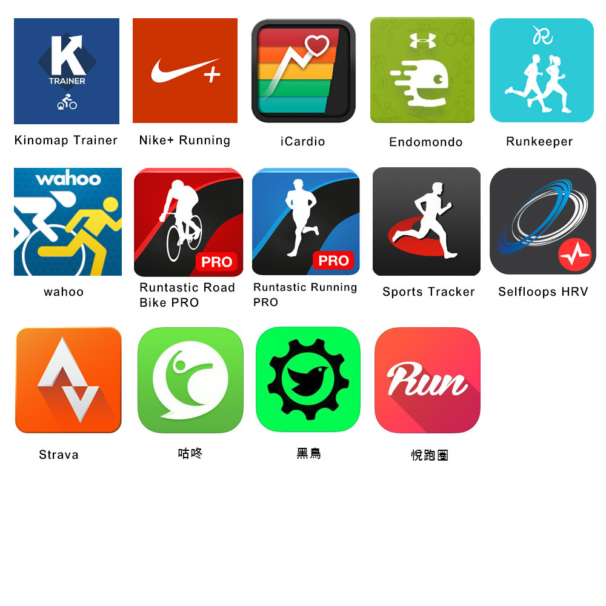

手錶最多儲存10筆運動資料，每筆最長紀錄8小時，當10筆存滿時，手錶會自動從最舊的一筆檔案開始覆寫。
當手錶電力不足時，手錶會自動結束運動並儲存該筆運動紀錄。欲進行長距離活動前，請先確保手錶充滿電且內存的運動資料皆已 同步至APP。
當手錶上方的「SC」 符出現閃爍，表示外購的速度踏頻器無法正常讀取數值，請排除該感測器電量是否不足，並嘗試與手錶重新配對，或參考其說明書以排解問題。
1.當手錶上方 符出現閃爍，表示光學感測器無法正常讀取心跳，請
嘗試將手錶背面的光學感測器及您的手腕擦拭乾淨，重新戴上手錶
(確認手錶服貼手腕皮膚、避開刺青)，靜待12~15秒讀出心跳數
後，再繼續運動。
2.當手錶上方 符出現閃爍，表示外購的心率帶無法正常讀取心跳，
請排除心率帶電量是否不足，再次沾濕心率帶兩側感應區，重新佩
戴並靜待12~15秒讀出心跳數後，再繼續運動。
- 確認已允許APP存取通知權限。
- 點選APP→設定→推送訊息，確認已設定。
- 確認手錶與手機距離3公尺以內。
- 確認已開啟手機藍牙及WIFI功能
- 檢查手錶右上是否有連接手機符 ，若無，請嘗試退出並重開APP。
- 確認手機作業系統為最新版本。
- 確認手機已安裝最新版本的APP。
- 確認手錶與手機距離3公尺以內。
- 確認手機藍牙及WIFI功能已開。
- 確認手錶已切入設定→藍牙→配對行動裝置，且在等待配對中。
- 重開APP，登入後，依照APP與手錶螢幕指示再次配對。
- 若仍無法排除，歡迎官網線上留言或致電免費客服諮詢。
Star ONE僅能連接一個外接式心率帶及一個速度踏頻器，如您換購新的感測器，請先將舊感測器從手錶→感測器中移除，再配對新的感測器。
ALATECH 藍牙心跳帶可搭配相當多的手機運動APP，有些是免費可下載，而有些APP則需要在使用時另外付費購買才可搭配。
下面是一些應用程序，供大家參考：

A.如果LED訊號指示燈沒有亮?
- 打開電池蓋，再次重新啟動感測器。
- 確認電池是否有毀損或接觸不良，又或是更換新電池。
B.為何我的APP不能與VC5感測器連線？
- 請檢查您手機中的藍牙系統和APP裡的速度/踏頻感測器設定是否開啟。
- VC5速度/踏頻感測器內的藍牙同步功能在沒有藍牙連線時會自動關閉，每次使用前請先騎動自行車，以喚醒安裝在花鼓上及曲柄上的感測器。期間若沒有與APP進行藍牙連線，會再進入休眠模式。
- 請檢查感測器與您的手機是否沒有在2公尺的傳輸距離範圍內。
- 請檢查感測器是否有電或是電量過低的狀況，都有可能導致無法正常連線，若遇此情況，請更換電池。
C.首次安裝電池於感測器內，LED訊號指示燈閃爍情況說明：
| LED狀態 |
説明 |
| 無閃爍 |
感測器進入休眠狀態 |
| 每一秒閃爍一次 |
感測器進行韌體更新狀態 |
| 每三秒閃爍一次 |
感測器正與行動裝置進行連結，等待約一分鐘後，運動APP若呈現連接上感測器的狀態，即可開始運動 |
心率帶若平時不使用時放置於乾燥陰暗處即可，並將感測器與感應織帶拆開。拆下時，以一手握住織帶頭部扭開，不可直接拉扯織帶，不使用時，保持感應織帶平整和乾燥，織帶感應區域請勿折損，以延長壽命。
倘若是在較為頻繁的使用情況，以下是清洗與保養建議：
1. 建議每次使用完畢可沖洗織帶。清洗前，請務必拆下感測器，才可將織帶沖水或清洗。(感測器須請以毛巾擦乾即可。)
2. 織帶部分，可用清水沖洗，沖洗後，用乾毛巾包裹織帶，用按壓的方式，把水分移轉到毛巾上，晾乾鬆緊帶，勿曝曬在陽光下。(清洗的水溫不超過40度。)
3. 清洗方式建議手洗，請勿添加增艷劑、肥皂和衣物柔軟精，並禁止浸泡、熨燙、乾洗、漂白和扭擰的動作。